Geneis: Part 1
Genesis: Part 1 je peta story mapa ARK-a koja je izašla 25. veljače 2020. kao plaćeni DLC koji je tada koštao €19.99.
Genesis: Part 1 je simulacija kroz 5 različitih bioma u obliku mini mapa: Bog, Arctic, Vulcano, Ocean i Lunar.
Uz vas, ovaj put je tu i vaša "asistentica" pod imenom HLN-A koja je mali leteći AI robot.
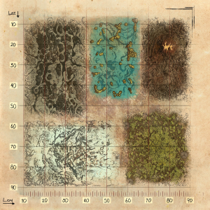
Po čemu je ova mapa posebna:
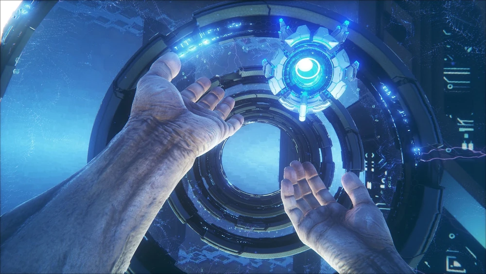
Ova mapa je drugčija od bilo koje prijašnje mape s time da je simulacija, podijeljena u 5 bioma kroz koje se može teleportirati.
Uz vas je HLN-A koja je mali leteći robot koji vam daje savjete, teleportira vas kroz biome i nudi mogućnost rgovine.
Glavna stvar ove mape su misije. Postoji 8 vrsta misija koje imaju različite zadatke koje trebate izvšit i za nagradu dobijete loot i hexagone koje možete potrošit u trgovini za resurse.
Misije se mogu naći na postajama kroz biome i kada ih započnete, morate odraditi zadane zadatke.
Misije se mogu započeti na tri različita difficulty-a, Gamma (najlakši), Beta i Alpha (najteži).
Loot mogu biti oružja, oklop, sedla ili blueprinti, svi različitih vrijednosti i jačine, i uz to se dobije različita količina hexagona, ovisno o vrsti misije i difficulzy-u.
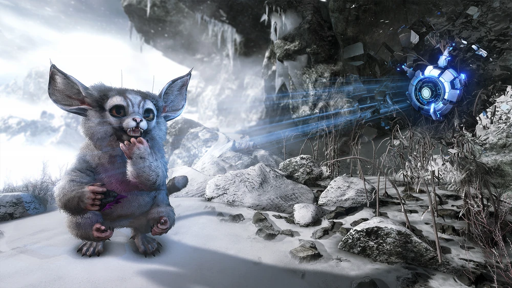
Stvorenja koja se ovdje mogu naći:
Bloodstalker je ogromni pauk koji se nalazi na ogromnim drvima Bog-a.
Pripitomljava se tako da mu dozvolite da vas uhvati u svoju mrežu i hranite ga vrećicama krvi.
Kada je pripitomljen, on postaje glavni oblik transportacije sa svojim mogućnostima ljuljanja mrežom kao Spider-Man.
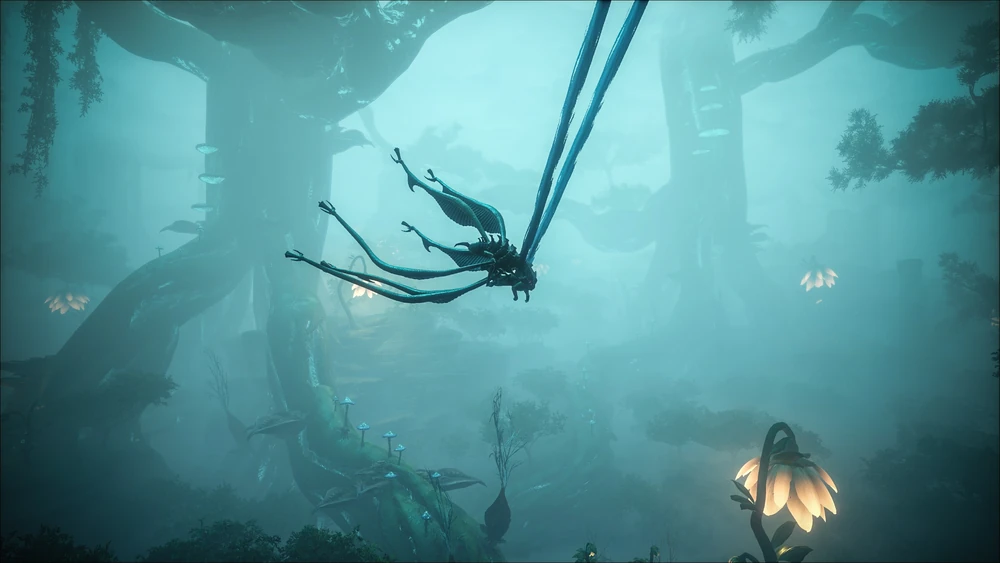
Ferox je na početku malo stvorenje veličine Jerboe, no ako mu date Element, pretvori se u ogromno čudovište.
Nalazi se u Arctic biomu i pripitomljava se upravo na taj način, hranite ga elemento i pokušavate preživjeti dok se ne smiri.
Kada je pripitomljen, vrlo je jako stvorenje dok je u jakoj formi...poput Hulka.
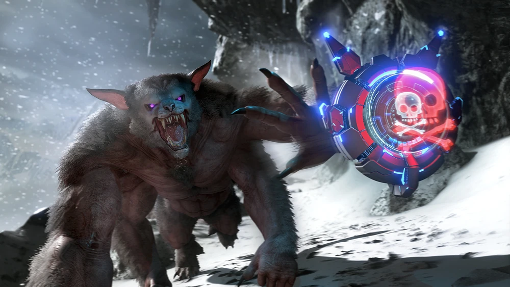
Magmasaur je ogromno vatreno stvorenje koje se nalazi unutar vulkana u Vulcano biomu.
Pripitomljava se na isti način poput Vywerna i Rockdrake tako da im ukradete jaje i odgajate bebu za sebe.
Kada je pripitomljen, vrlo je jaki i može peći metal unutar svog inventorya što znači da više netrebate Forge-ove.
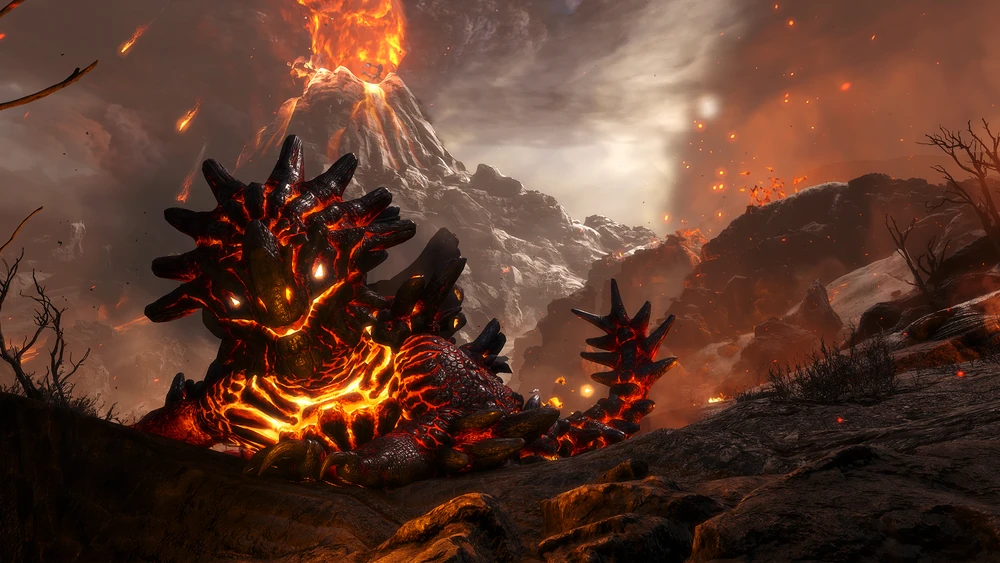
Biomi:
Bog je ogromna močvara prepuna kukaca, krokodila i manjih dinosaura poput Parasaura i Raptora.
Iako vam igra kaže da je ovo najsigurnije mijesto za početak, nedajde se zavarati jer idalje ima svoje opasnosti.
Ovo je jako dobro mijesto za riješavanje misija jer ima dosta lakih misija za brze hexagon-e.
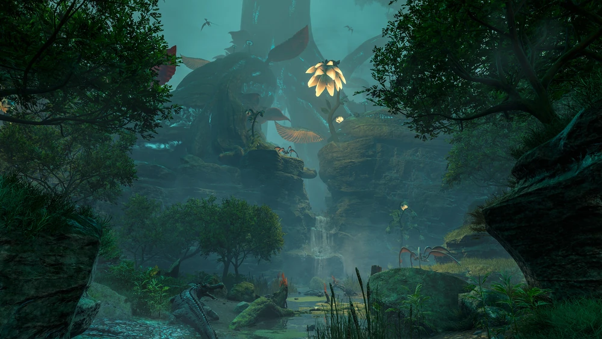
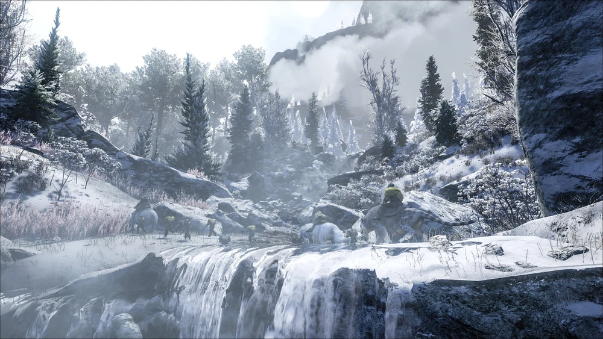
Arctic je ogromna tundra podijeljena na dva dijela planinom u sredini, gdje je s jedne strane relativno mirno, a druge vlada viječna mečava.
Ovo mijesto nije toliko opasno radi životinja koje tu žive koliko jest radi vremenskih uvijeta.
Šanse za preživjeti početak ovdje su vrlo male, ali kada imate potrebnu zimsku opremu, ovo je jako dobro mijesto za sakupljanje resursa.
Vulcano je biom koji je cijeli prekriven lavom te se u sredini nalazi ogroman vulkan unutar kojeg se može ući.
Ovaj biom ima vrlo opasne životinje ali resursi koji se ovdje nalaze su itekako vrijedni opasnosti.
Unutar vulkana se nalazi ogroman cave system i tu se može naći gnijezdo Magmasaura i čak i Element ore, no budite brzi da vulkan nebi eruptirao sa vama unutar njega.
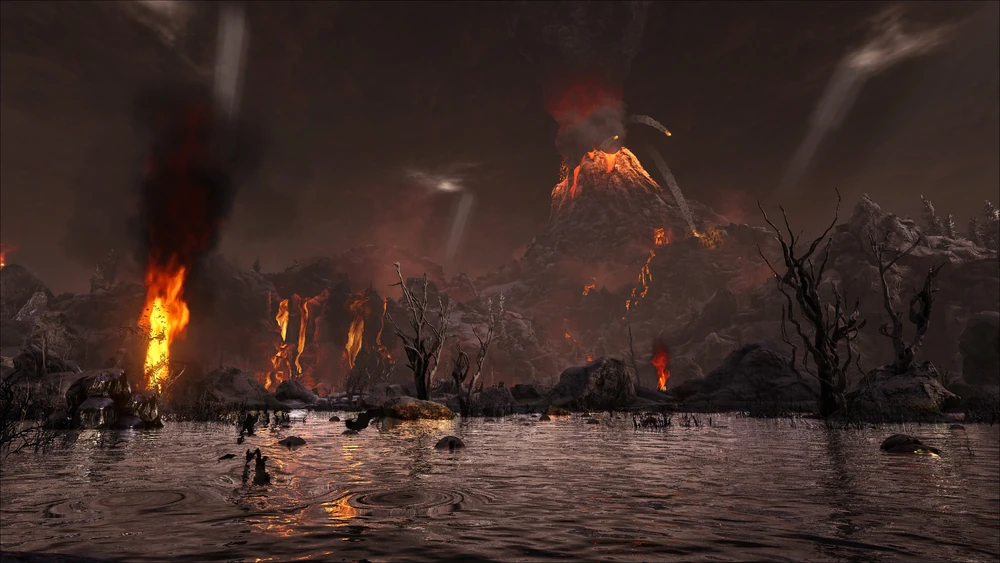
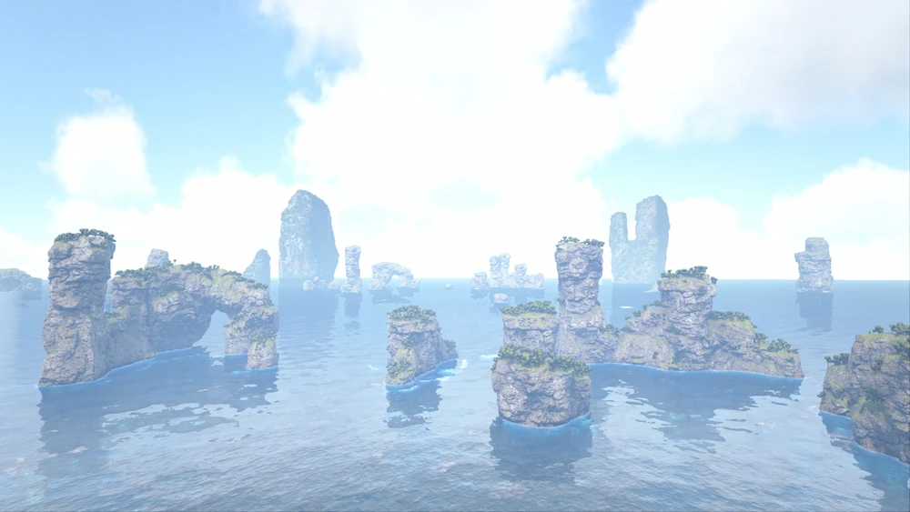
Ocean je najbolje mijesto za započeti ovu mapu. Iako igra kaže da je opasno, sva opasnost se nalazi ispod mora, dok su otoci sasvim sigurni.
Ispod mora se mogu naći neka vrlo jaka morska stvorenja koja će biti korisna jer ovo je prva i jedina mapa koja ima podvodni Boss Fight.
Ovaj biom ima jako dobre resurse ispod vode, od kojih su najznačajniji nafta i metal, ali budite oprezni jer životinje ovdje su veoma opasne.
Lunar je najopasniji biom ove mape i poseban je po tome što se zapravo nalazi u svemiru.
Sa ogromnim brojem tek dinosaura koji vas napadaju ćim uđete u biom, sunčevim zračenjem koje vas prži, ekstremnim temperaturama, na suncu vrućine i u sjeni hladnoća, nedostatka gravitacije i mogućnost propadanja kroz mapu radi nedostatka tla u svemiru, vaše šanse za preživjeti su veoma niske.
Ali zato je i nagrada od misija u ovom biomu vrijedna rizika.
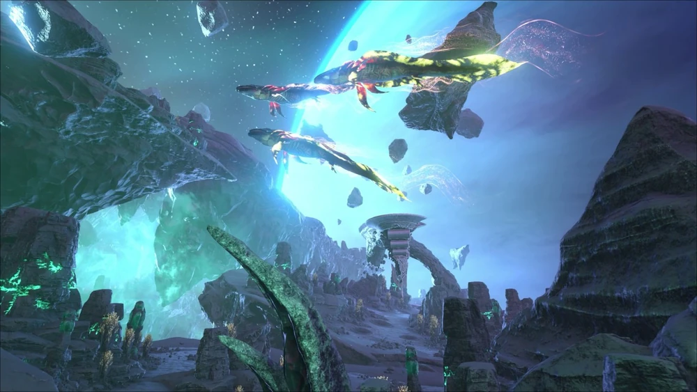